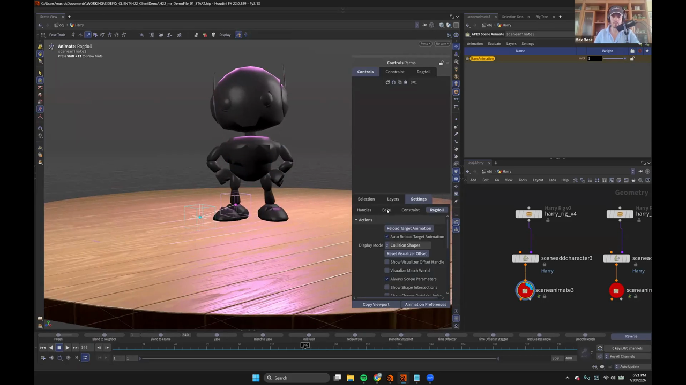
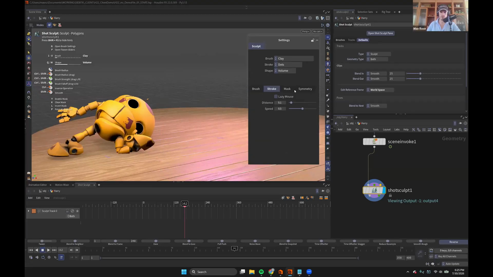
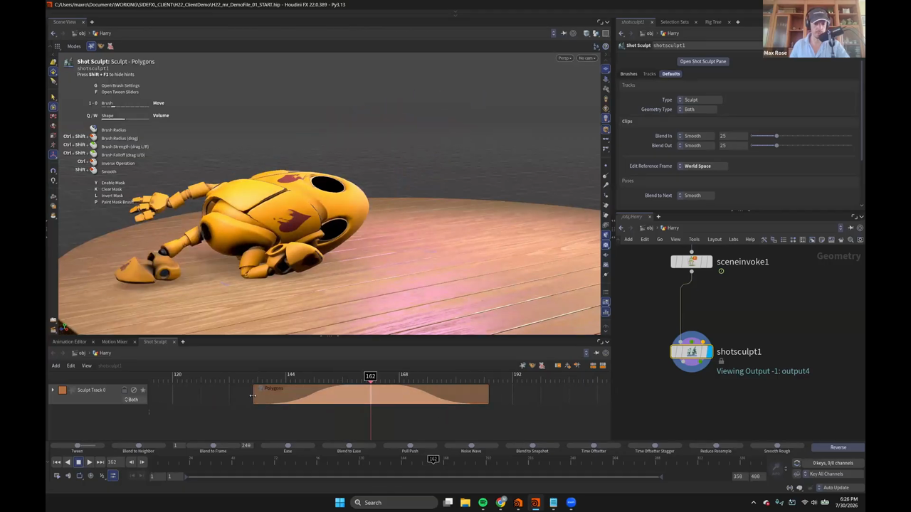

Houdini 22 KineFX アニメーション 2 — Ragdoll で引きずり出して Shot Sculpt で盛る
出典: Animate in KineFX | Part I | Max Rose | Houdini Illume （SideFX 公式ウェビナー / 講師 Max Rose さん / Houdini FX 22.0.389 / 1:22:20 / 英語）の 14:54〜26:20 部分。 このページは、上記の動画を見ながら自分用にまとめた日本語の学習メモです。SideFX 公式の翻訳ではありません。 前回はリグをノードとして扱うでした。
この記事で扱うこと
前回作った「手を振って飛び去る」アニメーションに対して、監督から2つ注文が入った、という設定で進みます。
- 「翼をやめて、もっと不格好に退場してほしい」→ Ragdoll で足を掴んで引きずり出します
- 「カートゥーンなんだからスカッシュ＆ストレッチが欲しい」→ リグに無いので Shot Sculpt で足します
前回の「アニメーションデータは Scene Animate 1ノードに乗る」という性質が効いてきます。
ノードをコピーするだけで3つ目のバージョンができるので、ファイルを増やさずに作り直せます。
1. Ragdoll に入る
アニメーションステートの中で C キーを押すとサブステートの一覧が出ます。
ここから Ragdoll を選ぶと、ヘッダーの表示が Animate: Ragdoll に変わります。
この状態で再生すると、Harry はいきなり崩れ落ちます。やりたいことは合っていますが、 崩れてほしいのはフレーム150からです。
いつ崩れるかを決める
- 選択セットのパネルを開き、Harry の横にあるロケーター型のアイコンをクリックしてコントロールを隠します。ragdoll だけに集中できます
- 選択セットで ragdoll をすべて選びます
- active ボタンをオフにして無効化します。これで元のアニメーションが再生されます
- フレーム150に移動して、もう一度 active をオンにします
これでフレーム150から崩れ落ちるようになります。 ただ最初はかなり暴れるので、stiffness を 25 くらいまで上げると落ち着いた動きになります。
小ネタとして、矢印キーの下を押すとアニメーションが逆再生され、上を押すと順再生されるそうです。 動画中でも逆再生になっていて「あ、逆でした」という場面がありました。

上の画像が Ragdoll の設定パネルです。パネルの構成はこうなっていました。
| 階層 | タブ |
|---|---|
| 上段 | Controls / Parms |
| その下 | Controls / Constraint / Ragdoll |
| 下段 | Selection / Layers / Settings |
| さらに下 | Handles / Bake / Constraint / Ragdoll |
画像では Display Mode が Collision Shapes になっているため、
Harry が黒い衝突形状の表示になっています。
2. Texas switch — IK に焼くための仕込み
ここが一番重要な下ごしらえです。 Ragdoll のデータをリグに焼くとき、IK コントロールに焼く必要があります。 そのままだと FK 側に入ってしまい、正しく焼けません。
そこで、Ragdoll が始まるフレーム150の直前で IK に切り替えておきます。
- フレーム150に移動して、config control を FK に切り替えます。IK が FK の位置に合わせようとします
- 1フレーム戻って、IK-FK blend を 1 まで戻します
- 反対側の腕も同じようにします
講師の方はこれを「Texas switch」と呼んでいました。 1フレームだけ素早く IK に戻す小技です。 この瞬間に小さなスナップが起きますが、 Ragdoll から焼いてしまえば目立たなくなるので問題ない、とのことでした。
3. Locator と tether constraint で引っ張る
足を掴んで引きずり出すために、引っ張る先となる locator を作ります。
- locator のサブステートに入り、
Hを押して locator を作ります animateに戻り、Harry の右足あたりに locator を移動します- フレーム150で
Shift+Tを押して位置にキーを打ちます （Shift+Rが回転、Shift+Tが移動のキー） - フレーム180に移動して、locator を画面外まで引っ張ります
結ぶ
Ragdoll に戻ります。ここで重要な注意点がありました。
Ragdoll に影響を与えるために locator を使うとき、 locator は active にしてはいけません。 これは RBD オブジェクトではないからです。
active をオフにしたうえで、フレーム150に移動し、
右足と locator を選択して H を押します。
これで tether constraint が張られます。
講師の方の説明では「Harry の足首から locator にロープを結んだようなもの」。 再生すると、Harry がフレーム150で崩れ、そのまま足を引っ張られて画面外へ持っていかれます。
4. 焼く
Ragdoll の結果をリグのコントロールに焼き込みます。
- ragdoll をすべて選択します（これを忘れると焼けません）
Settings→Bakeタブへ- フレーム範囲を 150 – 200 に設定
- 新しいレイヤーに焼きます。base animation を上書きしません
Bake Keysを実行
焼いたあとの手直し
焼いた結果を見ると、Harry の目が閉じてしまっていました。原因は面白いものでした。
実は正しくシミュレートされているのです。 目も RBD オブジェクトなので、引っ張られた勢いで閉じてしまっているだけです。
不要なので、目のキーフレームを削除します。
さらに fix という名前で新しいレイヤーを作り、
引っ張られ方が気に入らなかった頭の動きを手で直していました。
レイヤーを分けておけば、元の結果を壊さずに上から直せます。
5. Shot Sculpt でスカッシュ＆ストレッチを足す
リグにスカッシュ＆ストレッチのコントロールが入っていないので、 メッシュを直接触って足します。講師の方いわく「個人的に一番好きなツール」だそうです。
下ごしらえ — Scene Invoke
そのままではキャラクターを選択できません。パックされたままで、 アンパックされたジオメトリになっていないためです。
Scene Invoke を通してアンパックします。
評価済みの APEX グラフを直接使う方法もありますが、 そちらは動作が少し遅くなります。 Scene Invoke でシーンを呼び出したほうが速く動きます。
忘れると結果が読めなくなる設定

Shot Sculpt を置いたら、まず Defaults を World Space にします。
上の画像の右側、Defaults タブの Edit Reference Frame がそれです。
講師の方の言葉では「これでずっと予測しやすい結果になる」。デフォルトのままだと 意図しない方向にスカルプトが乗ってしまうということだと思います。
ブラシ
Animation → Shot Sculpt でパネルを開き、B キーでステートに入ります。
G でブラシ設定が開きます。画面左に出るホットキー一覧が親切でした。
| キー | 操作 |
|---|---|
G | Open Brush Settings |
F | Open Tween Sliders |
1–0 | ブラシの切り替え |
Q / W | Shape の切り替え |
Ctrl+Shift+ドラッグ | Brush Radius / Strength（左右）/ Falloff（上下） |
Y / K / L / P | Enable Mask / Clear Mask / Invert Mask / Paint Mask Brush |
ブラシ設定には Brush / Stroke / Mask / Symmetry のタブがあり、
Stroke には Lazy Mouse・Distance・Speed といった項目が並んでいます。
デフォルトのブラシは Clay ですが、
3 を押して Move ブラシに切り替えます。
講師の方は「Shot Sculpt では90%これを使う」と言っていました。
スカルプトするとクリップができる

Shift+Ctrl+ドラッグで頭を引っ張り出すと、
その場でタイムラインにクリップが自動生成されます。
上の画像の下半分がそれです。山型の曲線がブレンドの効き方を表しています。
- クリップにはイン点とアウト点があり、ベジェ補間で滑らかに入って抜けます
- 右側のパネルで
Blend In/Blend OutがどちらもSmoothの25になっています - イン点を動かせば、効き始めるタイミングを後ろにずらせます
- 白い線が、実際にスカルプトしたトラックの位置を示します
スカルプトは積み重ねられます。 動画では頭を引っ張ったあと、さらに体を少しカーブさせるスカルプトを追加していました。 不要になったら個別にオフにできます。
最後に Cache に繋いでキャッシュすれば、リアルタイムで再生して確認できます。
この記事のまとめ
Cキーでサブステートに入り、Ragdoll に切り替えます- 崩れ始めるタイミングは active のオン／オフで決めます。暴れすぎるときは stiffness を上げます
- 焼く前に「Texas switch」で IK に戻しておきます。これを忘れると IK コントロールに焼けません
- 引っ張るには locator を作り、active はオフのまま足と一緒に選んで
Hで tether constraint - Bake は ragdoll を全選択してから、新しいレイヤーへ。base animation は上書きしません
- 目が閉じるのはバグではなく、目も RBD として正しくシミュレートされているためです
- Shot Sculpt は
Scene Invokeでアンパックしてから。Defaults をWorld Spaceにするのを忘れずに - スカルプトすると自動でクリップができ、ブレンドのイン／アウトを調整できます
次は Jack in the Box を題材に、Set Driven Key の作り方に入ります。